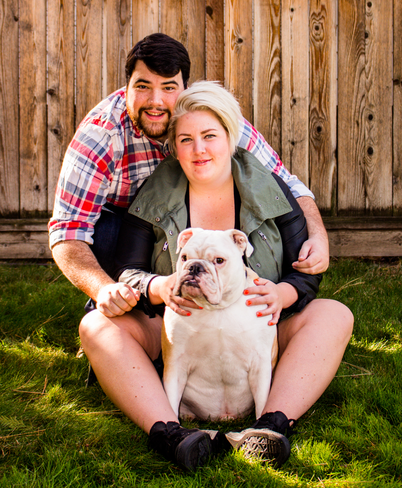

Keegan McClung
Hi, my name is Keegan McClung! I'm a 28 year old film major but I am currently going after my minor in VCD. I live with my girlfriend of 12 years, Margie, and my English Bulldog, Cujo. I enjoy photography, going to and making movies, as well as playing
video games.
Favorite Websites
